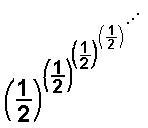
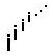
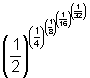

4. Patterns in infinite sequences
1. partial sums of infinite series2. Fibonacci numbers- see Chapter 7 and above
3. Ratios of consecutive Fibonacci numbers to get the Golden mean, in see Chapter 7 and above
4. Solving equations by iteration (chapter 8) and Maura's work iterating a function .
5. Finding square roots using different methods (chapter 10)
6. Convergent, divergent, limit of ('goes to')
7. Finding interest compounded quarterly, monthly, daily, continuously (chapter 11) -> e
8. The ratio of Surface area / Volume (in chapter 6, see also the answer page) of Cuisenaire Rods® leads to an infinite sequence that is convergent and leads to the explanation of why rats are nocturnal animals.
9. An infinite continued fraction for ø (the golden mean), leads to an infinite sequence that is convergent (chapter 8).
10. Iterating the square root of a number (chapter 10, #4).
11. Mr. Matsumoto's finding the square root of a number by iteration.
12. Finding the square root of a number by the iteration and averaging method (chapter 10).
13. Finding Pi using an infinite sequence (chapter 10).
14. In studying the polypowers we get an alternating infinite sequence that converges to about 0.64118650561396046518... The graph of this alternating sequence is on Don's polypower page
15. In studying the polypowers we get an infinite sequence that converges on the complex plain
0. +1. ä, 0.20788 +0. ä, 0.947159 +0.320764 ä,
0.0500922 +0.602117 ä, 0.387166 +0.0305271 ä,
0.782276 +0.544607 ä, 0.142562 +0.400467 ä,
0.519786 +0.118384 ä, 0.568589 +0.605078 ä,
0.242365 +0.301151 ä, 0.578489 +0.23153 ä,
0.42734 +0.548231 ä, 0.330967 +0.262892 ä,
0.574271 +0.328716 ä, 0.369948 +0.468173 ä,
0.400633 +0.26312 ä, 0.534744 +0.389328 ä,
0.362114 +0.403964 ä, 0.446697 +0.285567 ä,
0.487696 +0.412175 ä, 0.37717 +0.362866 ä ...It doesn't look like there is a pattern here, but If we take it out 120 terms and look at the last 2
0.438284 +0.360593 ä, 0.438282 +0.360593 ä, it is converging, spiraling in. See the graph on Don's polypower page.
16. Geoffrey in studying the polypowers he get infinite sequences that approach two numbers as limits
0.50000000000000000000000000000000000,0.84089641525371454303112547623321490,
0.55829656495243210628551030301446675,
0.81449843990595813521530437718983796,
0.56884576352844016137451638989793001,
0.81033928445346719291540110854487056,
0.57012978330081164270542728643548484,
0.80998490629061354357817850780898360,
0.57020181443662056433203193609246494,
0.80997234902270179178323730405307065,
0.57020338505011507076049853520819860,
0.80997218362952486364210534447034720,
0.57020339736532822895370286392953437,
0.80997218286703455279381377382640776,
0.57020339739834416243204059210364783,
0.80997218286585746057880855796828552,
0.57020339739837325404915898057822728,
0.80997218286585687323799028724432460,
0.57020339739837326221120728332388785,
0.80997218286585687314592471673916242,
0.57020339739837326221191796810348560,
0.80997218286585687314592028699579352,...
See the graph of the limits starting with a denominator of 1 to 5 on Geoffrey's page.
Back to Patterns in Mathematics
To order
Don's materials
Mathman home